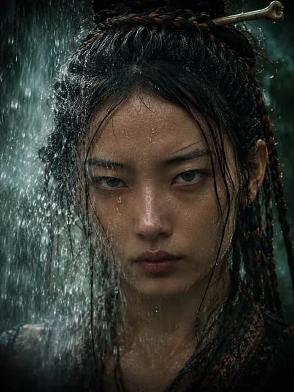
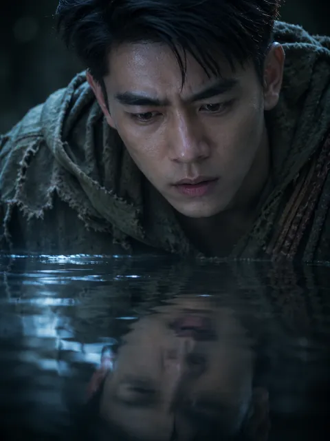
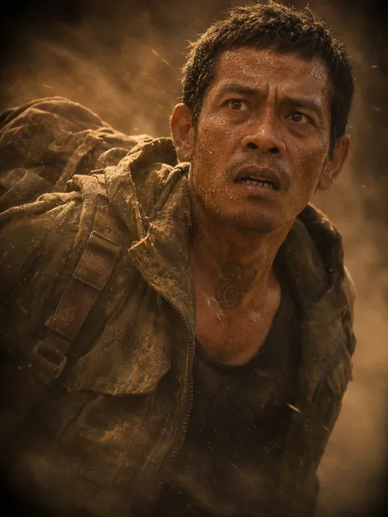
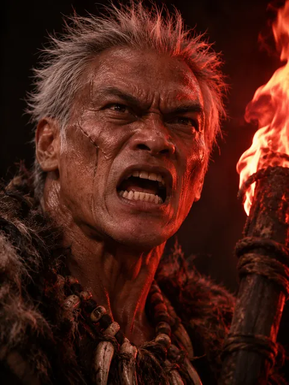
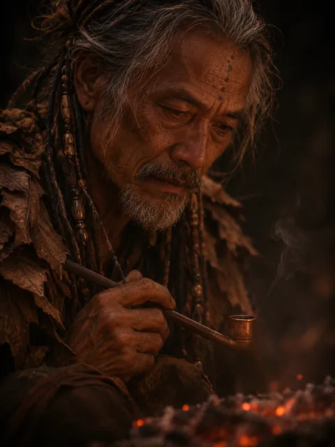

原创 IP
工作室自有的原创项目。这里放的是作品本身：它是什么、写到了哪里、现在能读到什么。

《上帝右手》
一部从婆罗洲雨林出发的长篇科幻三部曲，写生命的左右之别、人类认知的边界，以及理解彼此要付出的代价。
- 第一部
- 《上帝右手》
- 第二部
- 《手性契约》
- 第三部
- 《伊甸左手》
- 作者
- 元子
- 完成状态
- 三部均已完稿
- 阅读方式
- 第一部在作者博客「元子空间」免费阅读；第二、三部暂未公开
- 配图政策
- 小说文字为作者原创。角色与场景图像由 AI 辅助制作。
规格
- 篇幅
- 三部，共 75 章，约 40 万字（中文）
- 语言
- 中文原著；英文译本：英文版即将推出
- 受众
- 成年读者；喜欢科幻、思想性小说与婆罗洲题材的读者
- 可改编方向
- 漫画｜动画｜影视短片｜有声书 （意向标签，非承诺）
故事简介
一个人，能死多少次？
婆罗洲雨林深处，岩石穹顶下的黑暗谷，阳光只从南侧进来。这里的四个部族，各自把文明推向了身体与意识的深处：瑶南人心灵相通，族长艾鲁以精神之网统御全军，每倒下一名战士，他便承受一次临死的痛楚；朔影人以空间计算与电磁感知辨认世界，天生失明的族长也能"看见"眼前的人；喇葛人与灵兽结成"二心一魂"，失去兽，便可能失去半个自己；特斯人精细控制身体，直接读出他人的情绪与意图。
他们拥有外人梦寐以求的天赋，却仍不能停止彼此杀戮。
考古教授普勒带着学生言明、飞行员西门闯进山谷，为了亡父留下的一个问题：上帝，是不是右撇子？
变化先于答案到来。言明听懂了陌生的语言，却失去了家乡话；世界在他眼前化成角度与概率，情感一层层被剥离。西门伤口愈合、力量暴涨，那具身体却在加速耗尽他的生命。喇葛之王泽恩把四族推向同一个决战之日，儿女一个个离他远去。被放逐的特斯神将野花要人们彼此理解，而另一条路，要人们先向刀锋低头。
当外界的枪声闯进山谷，有人活得更强，有人看得更清，也有人正在失去原来的自己。
黑暗谷 · 四族
特斯、喇葛、瑶南、朔影：四个部族，各自的信念与特征，以及四族之间的相克环。


公开角色

野花
被放逐的特斯神将，曾在燃烧的吊桥上救下数千人。她能感知别人的情绪，却不能替任何人作出选择。

言明
来自古晋的年轻人，普勒的前学生，擅长辨识古文字。他在谷里听懂了陌生的语言，却渐渐失去了家乡话。
阿利斯泰尔·普勒
考古学教授，为亡父留下的一个问题走进雨林：上帝，是不是右撇子？

西门
三十九岁的伊班族前空军运输机飞行员。在谷里，他第一次尝到被承认的滋味，也开始为力量付出代价。

泽恩
喇葛之王。曾为救病危的儿女悬身断崖，如今要用一场战争终结四族的分裂。

艾鲁
瑶南族长，以精神织成的网络统御全军，也承受每一名战士的死亡。
岚姬
朔影族长，天生失明，以空间与电磁的感知认识世界。
视觉氛围
雾、穹顶下的冷光、雨夜的河、草海与林海；墨蓝、炭灰、雾蓝、银灰与苔绿，偶有一点暗金。不是明亮的丛林冒险，而是一个安静、幽深、让人想再往里走一步的世界。